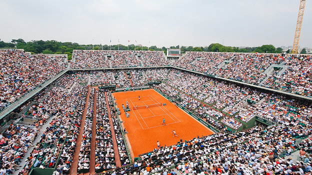
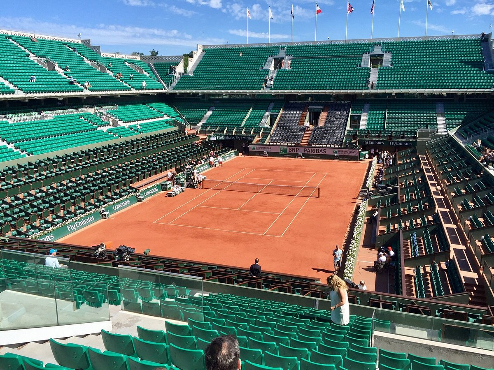
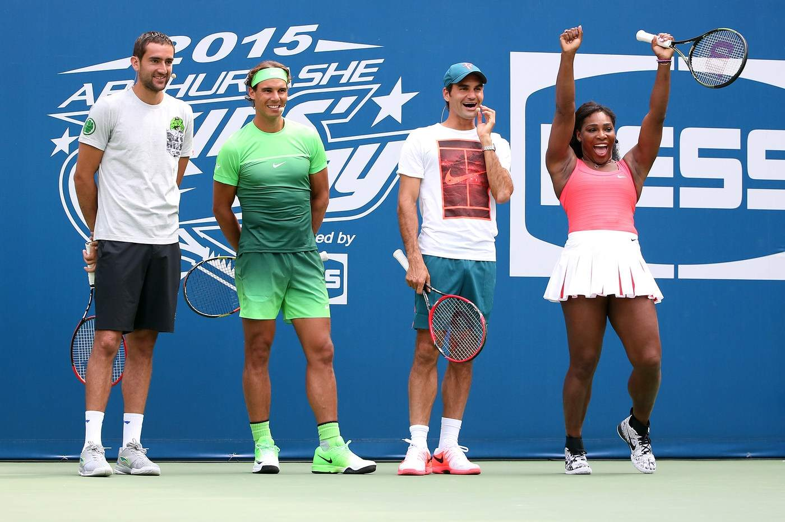
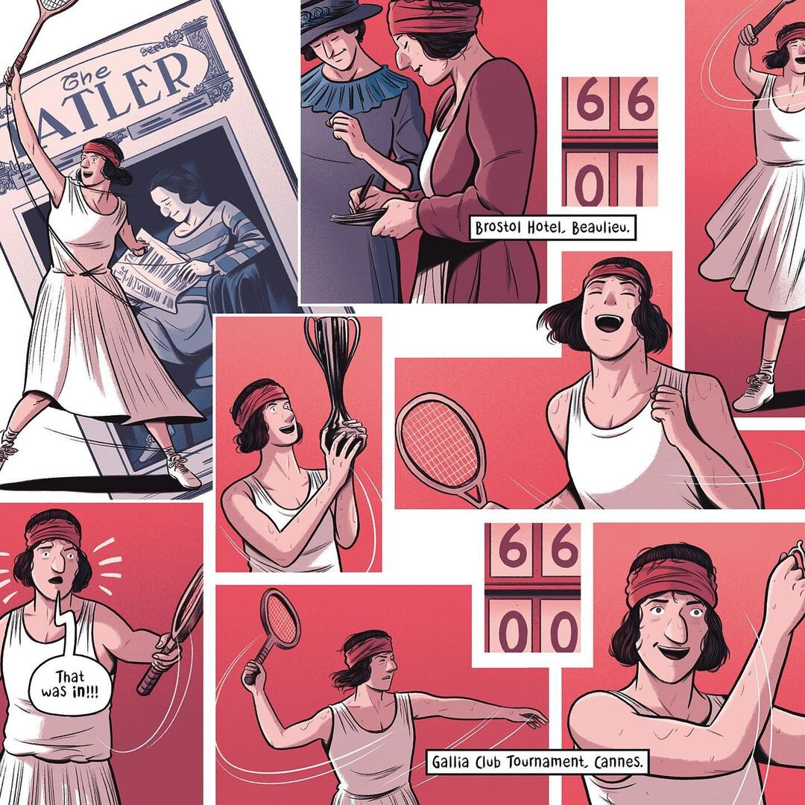

Ролан Гаррос
Це французький тенісний турнір, який проводиться щороку у Парижі.
Проведений на
глиняних
кортах, він
є одним з чотирьох
турнірів Великого шолома, поряд з Відкритим чемпіонатом Австралії, турніром Вімблдону і
Відкритим
чемпіонатом США в
Нью-Йорку.
Цей міжнародний тенісний турнір названо на честь відомого французького
авіатора,
який
загинув під час Першої
світової війни.
Перші випуски Ролан Гаррос
Ролан Гаррос - французький тенісний турнір, який в 1925 змінив чемпіонат Франції з тенісу, спочатку створений в 1891 в Парижі. На той час тенісні корти були трав'яними, і до 1924 року чемпіонат проводився виключно для французьких чи іноземних тенісистів, які мають ліцензію у Франції. Перший турнір проходив протягом одного дня, у ньому взяли участь 5 гравців. У 1897 році був проведений перший жіночий тенісний турнір, і тільки в 1902 з'явилися турніри в змішаному парному розряді (1907 - в жіночому парному розряді). У той же час в Уімблдоні в 1912 році були засновані чемпіонати світу з тенісу на глині, щоб віддати перевагу гравцям, які звикли грати в теніс на траві
Це також дозволило брати участь усім тенісистам, ліцензованим чи ні. Це нове покриття завдало збитків чемпіонату Франції, який, як і раніше, проводився на траві. У грудні 1924 року чемпіонат Франції було відкрито всім французьких і міжнародних гравців на кортах французького парку Сен-Клу. Однак після перемоги Франції в Кубку Девіса у 1927 році було вирішено збудувати стадіон «Ролан Гаррос» на території парку площею 3 гектари та встановити глиняні корти. Стадіон був урочисто відкритий у 1928 році, ця дата також ознаменувала початок проведення турнірів Великого шолома у Porte d'Auteuil.
Стадіон та його розвиток
У 1970-х роках на стадіоні Ролан Гаррос було 9 кортів, розташованих на загальній площі 3,35 га. На початку 1980-х років площа стадіону була збільшена до 5,7 га, що дозволило додати ще 9 тенісних кортів. У 1987-1991 роках було створено трибуни для преси та телевізійних організацій, а 1994 року було збудовано новий центральний корт, що вміщує до 10 000 глядачів. Площа стадіону «Ролан Гаррос» збільшилась до 8 гектарів
Протягом більш ніж 20 років площа стадіону продовжує збільшуватись, щоб розмістити нові об'єкти інфраструктури, пов'язані з проведенням турніру Великого шолома. Сьогодні на стадіоні є загалом 18 тенісних кортів, призначених для проведення турнірів, та 5 тенісних кортів, відведених для тренувань. 3 найбільші суди:
-
Двір Філіпа Шартьє, більш відомий як «центральний двір», у якому в 2020 році було встановлено зсувний дах, щоб упоратися з поганою погодою.
 -
Суд Сюзанни Ленглен

-
Двор Симона Матье

Найбільші переможці
- Род Лейвер
- Андре Агассі
- Новак Джокович
- Роджер Федерер
- Рафаель Надаль
Жіночий теніс
Сюзанн Ленглен - гордість Франції
Сюзанн Ленглен (Siuzanne Lenglen) (24.05.1899-4.07.1938) - видатна французька тенісистка, що залишила яскравий слід в історії морового тенісу. Вона була дворазовою олімпійською чемпіонкою 1920 року, ставала 35 разів переможницею турнірів "Великого шолома", з них 12 в одиночному розряді.
